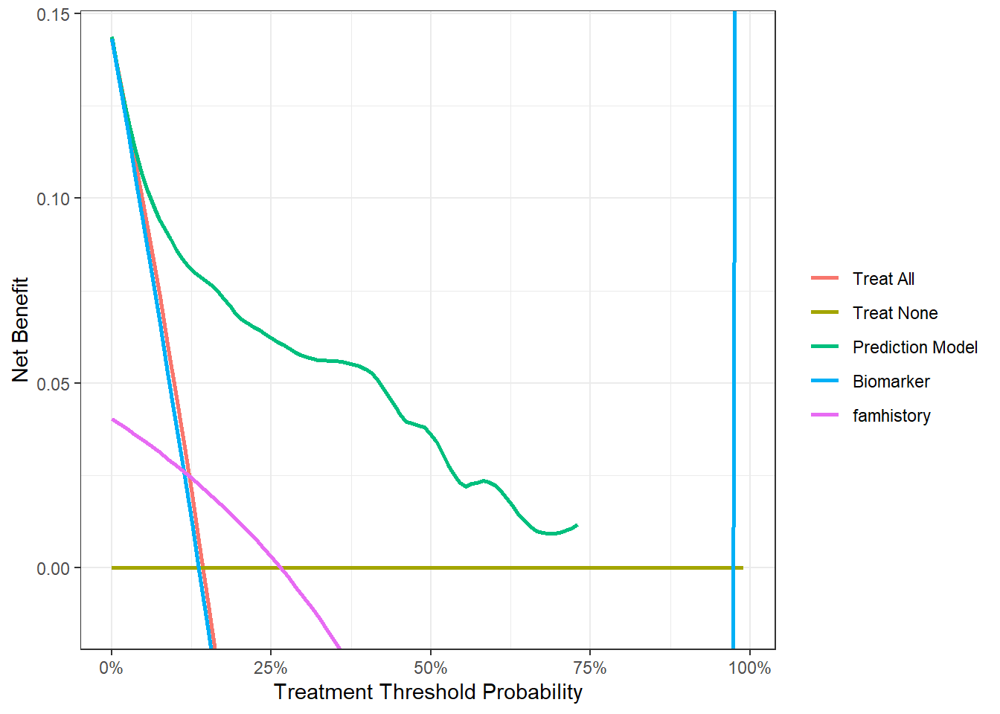

rm(list = ls())
# 加载R包和数据，不知道怎么安装的请看我前面的推文
library(dcurves)
library(survival)
data("df_surv")
# 查看数据结构
dim(df_surv)
## [1] 750 9
str(df_surv)
## tibble [750 × 9] (S3: tbl_df/tbl/data.frame)
## $ patientid : num [1:750] 1 2 3 4 5 6 7 8 9 10 ...
## $ cancer : logi [1:750] FALSE FALSE FALSE FALSE FALSE FALSE ...
## $ ttcancer : num [1:750] 3.009 0.249 1.59 3.457 3.329 ...
## $ risk_group : chr [1:750] "low" "high" "low" "low" ...
## $ age : num [1:750] 64 78.5 64.1 58.5 64 ...
## $ famhistory : num [1:750] 0 0 0 0 0 0 0 0 0 0 ...
## $ marker : num [1:750] 0.7763 0.2671 0.1696 0.024 0.0709 ...
## $ cancerpredmarker: num [1:750] 0.0372 0.57891 0.02155 0.00391 0.01879 ...
## $ cancer_cr : Factor w/ 3 levels "censor","diagnosed with cancer",..: 1 1 1 1 1 1 1 2 1 1 ...41 生存数据的决策曲线分析
前面介绍了logistic回归的DCA的5种绘制方法，今天学习下cox回归的DCA绘制方法。也是有多种方法可以实现，但我比较推荐能返回数据，用ggplot2自己画的那种。
41.1 方法1：dcurves
使用dcurves包,使用的数据集是包自带的df_surv数据集，一共有750行，9列，其中ttcancer是时间，cancer是结局事件，TRUE代表有癌症，FALSE代表没有癌症。
并不是只有结局事件是生存或者死亡的才叫生存资料哦！只要是time-event类型的，都可以。
这个包使用起来很别扭，但是可以说它很灵活！
如果预测变量只有1个，且是0,1表示的，那就很简单，直接用就行；如果有多个预测变量，就需要先计算出预测概率，然后才能使用。
预测变量是famhistory，这是0,1表示的二分类变量：
library(ggplot2)
dcurves::dca(Surv(ttcancer, cancer) ~ famhistory,
data = df_surv,
time = 1 # 时间选1年
) %>%
plot(smooth = T)
下面展示一个把多个模型的DCA画在一起的例子，和之前介绍的dca.r的用法优点类似。
cancerpredmarker这一列已经是概率了，marker是数值型的连续性变量，famhistory是0,1表示的二分类变量。
dcurves::dca(Surv(ttcancer, cancer) ~ cancerpredmarker + marker + famhistory,
data = df_surv,
as_probability = "marker", # 只有marker需要转换成概率
time = 1,
label = list(cancerpredmarker = "Prediction Model", marker = "Biomarker")) %>%
plot(smooth = TRUE,show_ggplot_code = T) +
ggplot2::labs(x = "Treatment Threshold Probability")
## # ggplot2 code to create DCA figure -------------------------------
## as_tibble(x) %>%
## dplyr::filter(!is.na(net_benefit)) %>%
## ggplot(aes(x = threshold, y = net_benefit, color = label)) +
## stat_smooth(method = "loess", se = FALSE, formula = "y ~ x",
## span = 0.2) +
## coord_cartesian(ylim = c(-0.0147287067742928, 0.147287067742928
## )) +
## scale_x_continuous(labels = scales::percent_format(accuracy = 1)) +
## labs(x = "Threshold Probability", y = "Net Benefit", color = "") +
## theme_bw()
可以看到marker这个曲线有点过分了。。结果也给出了ggplot2的代码，大家可以自己修改。
上面是多个模型在同一个时间点的DCA曲线，如果是同一个模型在不同时间点的DCA，这个包不能直接画出，需要自己整理数据，因为不同时间点进行治疗的风险和获益都是不一样的，所以会出现同一个阈值概率对应多个净获益的情况，所以none和all每个概率阈值下都有1套数据。
如果你的预测变量是多个，就需要先计算预测概率。
# 构建一个多元cox回归
cox_model <- coxph(Surv(ttcancer, cancer) ~ age + famhistory + marker, data = df_surv)
# 计算1.5年的概率
df_surv$prob1 <- c(1-(summary(survfit(cox_model, newdata=df_surv), times=1.5)$surv))
# 我们分2步，先获取数据，再用ggplot2画图
x1 <- dcurves::dca(Surv(ttcancer, cancer) ~ prob1,
data = df_surv,
time = 1.5
)%>%
dcurves::as_tibble()
# 使用自带的画图代码
ggplot(x1, aes(x=threshold, y=net_benefit,color=variable))+
stat_smooth(method = "loess", se = FALSE, formula = "y ~ x", span = 0.2) +
coord_cartesian(ylim = c(-0.03, 0.25)) +
scale_x_continuous(labels = scales::label_percent(accuracy = 1)) +
labs(x = "Threshold Probability", y = "Net Benefit", color = "") +
theme_bw()
## Warning: Removed 20 rows containing non-finite values (`stat_smooth()`).
大家还可以根据自己的喜好继续调整细节。
41.2 方法2：ggDCA
使用ggDCA包。是这么多方法里面最简单的一个。对于同一个模型多个时间点、同一个时间点多个模型，都可以非常简单的画出来。
如果遇到报错：no points selected for one or more curves, consider using …，请安装GitHub版本的ggDCA包，且不要同时加载其它可以做DCA的R包。
还是使用dcurves里面的df_surv数据集作为演示。
library(ggDCA)
## Warning in .recacheSubclasses(def@className, def, env): undefined subclass
## "ndiMatrix" of class "replValueSp"; definition not updated
##
## Attaching package: 'ggDCA'
## The following object is masked from 'package:dcurves':
##
## dca
# 建立多个模型
cox_fit1 <- coxph(Surv(ttcancer, cancer) ~ famhistory+marker,
data = df_surv)
cox_fit2 <- coxph(Surv(ttcancer, cancer) ~ age + famhistory + marker, data = df_surv)
cox_fit3 <- coxph(Surv(ttcancer, cancer) ~ age + famhistory, data = df_surv)多个模型同一时间点的DCA：
df1 <- ggDCA::dca(cox_fit1, cox_fit2, cox_fit3,
times = 1.5 # 1.5年，默认值是中位数
)
library(ggsci)
ggplot(df1,linetype = F)+
scale_color_jama(name="Model Type",labels=c("Cox 1","Cox 2","Cox 3","All","None"))+
theme_bw(base_size = 14)+
theme(legend.position = c(0.8,0.75),
legend.background = element_blank()
)
## Warning: Removed 498 rows containing missing values (`geom_line()`).同一个模型多个时间的DCA：
df2 <- ggDCA::dca(cox_fit2,
times = c(1,2,3)
)
ggplot(df2,linetype = F)+
scale_color_jama(name="Model Type")+
theme_bw()+
facet_wrap(~time) # 分面展示，因为不同时间点净获益是不一样的
## Warning: Removed 1689 rows containing missing values (`geom_line()`).
多个模型多个时间点：
df3 <- ggDCA::dca(cox_fit1,cox_fit2,cox_fit3,
times = c(1,2,3)
)
ggplot(df3,linetype = F)+
scale_color_jama(name="Model Type")+
theme_bw()+
facet_wrap(~time)
## Warning: Removed 1226 rows containing missing values (`geom_line()`).
非常强！如果你不会自己搞数据，就用这个！
41.3 方法3：stdca.R
使用这个网站给出的stdca.r文件绘制cox的DCA，需要代码的直接去网站下载即可。
注意
这个网站已经不再提供该代码的下载，我很早之前就下载过了，所以我把dca.r/stdca.r这两段代码放在粉丝QQ群文件，需要的加群下载即可（免费的，别问我怎么加群）。
但是原网站下载的stdca.r脚本在某些数据中会遇到以下报错：Error in findrow(fit,times,extend):no points selected for one or more curves, consider using the extend argument，所以我对这段脚本进行了修改，可以解决这个报错。但是需要付费获取，获取链接：适用于一切模型的DCA，没有任何答疑服务，介意勿扰。
数据还是用df_surv数据集。
rm(list = ls())
library(survival)
library(dcurves)
data("df_surv")
# 加载函数,这个是我修改过的
# 原函数有时会报错:no points selected for one or more curves, consider using...
# 获取方式：https://mp.weixin.qq.com/s/TZ7MSaPZZ0Pwomyp_7wqFw
source("E:/R/r-clinical-model/000files/stdca.R")
# 构建一个多元cox回归
df_surv$cancer <- as.numeric(df_surv$cancer) # stdca函数需要结果变量是0,1
df_surv <- as.data.frame(df_surv) # stdca函数只接受data.frame
cox_model <- coxph(Surv(ttcancer, cancer) ~ age + famhistory + marker, data = df_surv)
# 计算1.5年的概率
df_surv$prob1 <- c(1-(summary(survfit(cox_model, newdata=df_surv), times=1.5)$surv))
# 这个函数我修改过，如果你遇到报错，可以通过添加参数 xstop=0.5 解决
dd <- stdca(data=df_surv,
outcome="cancer",
ttoutcome="ttcancer",
timepoint=1.5,
predictors="prob1",
smooth=TRUE
)
多个模型在同一个时间点的DCA画法，和第一种方法很类似，也是要分别计算出每个模型的概率。
# 建立多个模型
cox_fit1 <- coxph(Surv(ttcancer, cancer) ~ famhistory+marker,
data = df_surv)
cox_fit2 <- coxph(Surv(ttcancer, cancer) ~ age + famhistory + marker, data = df_surv)
cox_fit3 <- coxph(Surv(ttcancer, cancer) ~ age + famhistory, data = df_surv)
# 计算每个模型的概率
df_surv$prob1 <- c(1-(summary(survfit(cox_fit1, newdata=df_surv), times=1.5)$surv))
df_surv$prob2 <- c(1-(summary(survfit(cox_fit2, newdata=df_surv), times=1.5)$surv))
df_surv$prob3 <- c(1-(summary(survfit(cox_fit3, newdata=df_surv), times=1.5)$surv))
# 画图
dd <- stdca(data=df_surv,
outcome="cancer",
ttoutcome="ttcancer",
timepoint=1.5,
predictors=c("prob1","prob2","prob3"),
smooth=TRUE
)
41.4 方法4：DIY
返回画图数据，再用ggplot2画图：
cox_dca <- stdca(data = df_surv,
outcome = "cancer",
ttoutcome = "ttcancer",
timepoint = 1.5,
predictors = c("prob1","prob2","prob3"),
smooth=TRUE,
graph = FALSE
)
library(tidyr)
cox_dca_df <- cox_dca$net.benefit %>%
pivot_longer(cols = c(all,none,contains("sm")),names_to = "models",
values_to = "net_benefit"
)使用ggplot2画图：
library(ggplot2)
library(ggsci)
ggplot(cox_dca_df, aes(x=threshold,y=net_benefit))+
geom_line(aes(color=models),linewidth=1.2)+
scale_color_jama(name="Models Types",
labels=c("All","None","Model1","Model2","Model3"))+
scale_x_continuous(labels = scales::label_percent(accuracy = 1),
name="Threshold Probility")+
scale_y_continuous(limits = c(-0.05,0.2),name="Net Benefit")+
theme_bw(base_size = 14)+
theme(legend.background = element_blank(),
legend.position = c(0.85,0.75)
)
## Warning: Removed 83 rows containing missing values (`geom_line()`).常见的DCA方法都展示了，大家自己选择使用哪个就好。